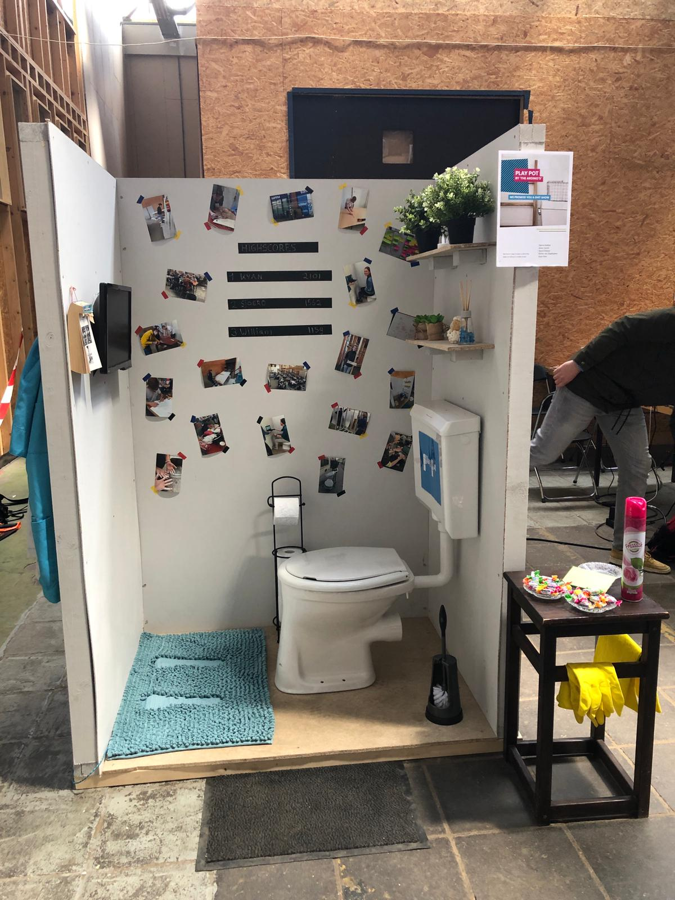

Labweken Proces
Dag 1
De eerste dag HCI, wat een dag. Ik had geen idee waar we vandaag aan zouden beginnen, wat we zouden doen, of wat het plan was. Na de introductie hebben we met de groep even kennis gemaakt en hebben we onze ervaringen tot nu toe gedeeld. Dat werkte goed, om eerst even te gronden en vervolgens te kijken welke stappen we zullen nemen.
We hadden als groep geen idee wat we aan het doen waren. We waren erg zoekend naar een goede aanpak, en besloten dus te beginnen met wat items op het scrumboard te zetten. Voorbeelden zoeken, richting zoeken, technologieën bekijken, etc.
Ik stelde zelf voor om wat voorbeelden te verzamelen van interacties die we zelf leuk vonden, om daar de leuke dingen uit te onttrekken en te gebruiken voor het zelf in elkaar zetten van een concept. Ik vind de aanpak van iets ontwerpen vanuit een technologie in plaats van een probleem heel erg leuk, al vind ik het ook erg moeilijk. Je bent toch vanuit CMD en het werkveld gewend alles te ontwerpen en te maken vanuit de intentie dat het een probleem oplost of een klant laat betalen. Bij de lab-weken moet dat gegeven de deur uitgegooid worden en gaat het puur om de technologie en de uitwerking daarvan. Ik denk zelf dat we daar als groep (en ik individueel) in de loop van de eerste week wel onze draai in vinden.
Zo zijn we met elkaar rond een tafel gaan brainstormen over mogelijke concepten en/of technieken. Hier hebben we 3 concepten van op een vel getekend om wat overzicht te krijgen en te kiezen voor een concept. Om een beetje zeker te weten dat we op het goede spoor zaten hadden we om feedback gevraagd bij een van de docenten.
Na het vragen voor feedback aan de docent kregen we een beetje de opdracht om te gaan spelen met de technologieën, en nog niet verloren te raken in een final concept. Ik merkte al dat ik het moeilijk vond om overeenstemming daarover te vinden, maar ik was toch zelf even aan de slag gegaan. Ik had het idee om een spelletje te maken waarbij een vogel op een willekeurige positie zat, die je alleen kon horen. En dat je via een koptelefoon moest raden waar de vogel zat. Best wel een grappig en leuk iets, maar niet iets waar ik wat mee wil in het eindconcept. Dit probleem had ik even aan Tim voorgelegd, en zo kreeg ik een wat genuanceerder antwoord. Hij stelde zelf voor om de dingen te doen waar jullie of jij van denken dat ze leerzaam zijn voor het proces of het eindproduct. Het uitproberen van de technologie dient ook een beetje als zekerheid dat hetgeen wat je uiteindelijk wilt gaan maken ook te realiseren is, en je daar niet pas de tweede week achter komt.
 Foto gemaakt door Djenna
Foto gemaakt door Djenna
Dag 2
We hebben een idee! Het heeft de hele dag gekost, maar we hebben uiteindelijk met de hele groep een idee bedacht waar we met z’n allen enthousiast over zijn, daar straks meer over.
 Foto gemaakt door Kyan
Foto gemaakt door Kyan
Gisteren kregen we het advies om te gaan ontdekken in de richting van verschillende technologieën en methodes. We besloten als groep om in ieder geval de eerste helft van de dag toe te wijden aan deze ontdekking, in je eentje, of in een duo. Ik besloot zelf aan de slag te gaan omdat ik meer wilde leren van Processing, voornamelijk hoe om te gaan met Inputs en met PVectoren. Ik had die dag een xbox-controller meegenomen, puur om een beetje mee te gaan spelen. Met een mengelmoes van x-y controls, acceleratie/rem-controls, en de grote onbekende vectoren besloot ik een autospelletje te maken. Kan ik een autootje op het scherm bewegen aan de hand van mijn controller, zoals de eerste vorm van GTA.
 Foto gemaakt door Djenna
Foto gemaakt door Djenna
Bij het experimenteren lukte het mij om de controls te mappen aan floats in processing, via een externe input library. Ik kreeg de vector-wiskunde voor elkaar door deze geweldige tutorial over hoe je positie, acceleratie, en snelheid aan elkaar kon verbinden met vectoren (als in een game-engine). Ik vond het leuk, was lekker bezig, maar liep vast bij het draaien van het voertuig. Tijdens het rondkijken naar de rest van ons groepje was iedereen een beetje down. Dingen lukte niet, we zagen er het nut niet van in, en hadden even ons eigen momentje nodig. Ik heb even met Djenna buiten gezeten om te reflecteren op hoe het nu ging. We hadden inderdaad de consensus dat we richtingloos waren, en daar moeilijk mee om konden gaan. We kwamen nog op 3 ideeën, maar ik en de rest van de groep bleven ze “wel aardig, is wel grappig” vinden. Ik zei “Jongens, laten we even een uitje gaan doen, een stukje lopen, naar de Gamma whatever, misschien komen we daar op leuke ideeën”. En ja hoor, bij de WC-afdeling kwamen we op het geweldige idee om een spel op de WC te maken! Het klonk onzinnig, het had nog geen toepassing, maar we waren allemaal enthousiast. Voor het eerst waren we enthousiast over een idee dat zo vaag als wat was.
Wat ik als valkuil van het project zag, was dat ik alle functionaliteiten zou moeten programmeren. Nu vind ik dat niet zo’n punt aangezien ik programmeren leuk kan vinden, maar bijna alle eerdere ideeën die we hadden, werden pas echt leuk en interessant door wat er in het spel kon gebeuren, en dat moest uiteraard door mij geprogrammeerd worden. Daar waren we ook als groep niet naar op zoek, we wilden iets doen met onze handen, lekker bezig zijn, dingen maken, dingen zagen, verven, een WC-hok was dé oplossing die we zochten. We sloten de dag af met een goed gevoel, we hadden een idee, en morgen konden we na gaan denken over de uitwerking.
 Foto gemaakt door Anne
Foto gemaakt door Anne
Dag 3
Vandaag begon de dag met een lecture van Joost Broekens over Artificial Intelligence. Advies van mij om dit niet vaker als eerste in de ochtend te doen, maar het naar de middag te verplaatsen. Ik vond het college erg saai, ik kijk zelf redelijk wat video’s over AI van bijvoorbeeld CodeBullet of TwoMinutePapers op YouTube, het hele concept van AI ben ik al wel goed bekend mee. Daarom was dit college voor mij wel heel oppervlakkig, en volgens mij vond iedereen het iets te lang duren.
Foto gemaakt door DjennaBij de standup hebben we bepaald een wat uitgebreidere planning te maken, en besloten een mindmap te maken van ons concept. Daar hebben we alle materialen, stappen, en sensoren uitgelicht om te wat meer inzicht te krijgen in de planning. We hebben als groepje veel geluk dat Kyan in de bouw werkt en veel ervaring heeft met het bouwen van stevige constructies. Hij was verder de rest van de dag bezig om de materiaalkosten en benodigdheden te berekenen. Vandaag leek de eerste dag te zijn dat iedereen een eigen taak had en we als groepje lekker op weg waren.
Ik heb het op mezelf genomen om een begin te maken met de footcontroller van ons concept. Omdat je niet thuis of op school werkt kom je er wel snel achter dat je weinig materialen hier hebt. De Gamma had geen kleine houten plankjes, en de puinbakken in de buurt hadden ook weinig nuttigs. Ik ben die avond thuis even gaan kijken of ik nog wat hout had om te gebruiken is als ondergrond voor de footcontroller. Het idee is dat er onder je voeten 2 push-buttons komen die gebruikt worden om een spelletje te spelen. Over het spelletje hebben we even rond de tafel gebrainstormd.
Oude arcade spelen, Asteroids, Pong, 4 op een rij… Ik kwam zelf met het idee om het dino-spelletje van Google te maken. Je zit op de WC, er is geen internet, dan maar dat spelletje spelen, maar dan met je voeten! We hebben ook nog het idee dat je verplicht ben je telefoon in een bakje te doen om het spel te beginnen, al wordt dat iets voor na de MVP, als wij ervan verzekerd zijn dat alles werkt.
 Foto gemaakt door Djenna
Foto gemaakt door Djenna
De rest van de dag heb ik besteed aan het maken van het dinospel. Ik heb besloten het programma in Processing te maken vanwege de makkelijke samenwerking met Arduino, en mijn kennis van het programma. Tot nu toe heb ik een timer die de snelheid van het spel op laat lopen, wat stipjes die op de grond aangemaakt worden, en een willekeurige cactus/vogel die ontstaat en met zijn vleugels flapt. Ik wil alle code wel zelf schrijven, omdat ik dan goed weet hoe alles werkt en waar mogelijke fouten kunnen ontstaan. Voor nu wist ik dat ik kon beginnen aan:
- Een globale snelheid aanmaken die constant oploopt, waar een score aan verbonden zit.
- Een lijn op de grond trekken waar de Dino voor loopt.
- Verschillende objecten aanmaken met verschillende eigenschappen, zoals een positie, een breedte, een staat, een type
- 3 verschillende cactussen
- Stipjes op de grond
- Vogels
- Wolken
Al deze objecten heb ik binnen Processing aangemaakt als object, met een constructor, een update-functie, en een render-functie. Er was nog weinig te zien op het scherm, maar het was mij vandaag gelukt om elke 10 frames (met een kans van 50%) een stipje op de grond te maken (een nieuw object in de stipjes-array te pushen). Dit stipje had een willekeurige lengte en y-positie, werd via de update functie bewogen volgens de snelheid, en via de render-functie getekend middels de line-functie in processing. Ik weet niet tot in hoeverre ik exact moet beschrijven hoe ik het geprogrammeerd heb, dus ik zal het vooral houden bij mijn aanpak en de “waarom” van wat ik gedaan heb.
4e dag
De dag begon met een gastspreker over Artificial Creatures. Hij vertelde over een set van kleine “robotjes” die rondom de stad gehangen werden met het doel om een Neural Network op te zetten. Er waren geen parameters opgezet voor waar de creatures op zouden meten of welk doel ze zouden achterhalen, het ging puur om het vormen van een Neural Network op basis van de verzamelde input. Ik vond het een leuk concept vanuit de manier van werken. Het idee om het product te maken met de intentie om data te verzamelen en te kijken welke links er te halen zijn binnen die data. Een idee van, we zien wel wat de creatures gaan doen, vond ik een leuke en interessante aanpak van een project. Voordat je het wist waren de eerste uren alweer voorbij en konden we aan de slag.
 Foto gemaakt door Djenna
Foto gemaakt door Djenna
Ik ben samen met de groep op pad gegaan naar de gamma om de platen en balken te halen voor het bouwwerk. Op een gegeven moment zijn Mirthe en ik afgesplitst om ons te richten op de voetmat. Na scharnieren gevonden te hebben in de gamma wist geen de medewerkers of er drukveren aanwezig waren, en hebben we dat bij de gamma maar opgegeven. Op de weg terug liepen we langs de auto-onderdelenwinkel aan de andere kant van de straat. Hier heb ik brutaal gevraagd of ze toevallig drukveren hadden, en ja hoor, meneer kwam aanzetten met een bakje veren waar we even in konden kijken. Als kers op de taart mochten we de 2 veertjes ook nog eens gratis meenemen, topservice!
.jpeg)
Eenmaal terug heb ik met Mirthe aan het scharnier en mechaniek gewerkt. We kwamen op het idee om aan de onderkant van het pedaal een bout te bevestigen die op de knop zou drukken. Verder heb ik nog een paar uur gewerkt aan het programmeren van het spel. Er moesten sprites komen van de dino en de objecten, de cactussen moesten ingebouwd worden, en er moet een functie geschreven worden die checkt of er objecten zijn die buiten het scherm vallen, nadat ze de Dino gepasseerd zijn, die kunnen dan verwijderd worden en aangeven dat er een nieuw object aangemaakt kan worden (met weer een willekeurige kans). Het hele spel hangt samen met veel willekeurigheden. Dit was ook noodzakelijk om het spel competitief maar ook niet repetitief te maken. Bij een vast level zouden mensen misschien sneller afhaken, of zouden er blokkades ontstaan die of te makkelijk of te moeilijk waren. Als laatste is het ook een stuk makkelijker om te schrijven: if(random(1) < 0.05), // doe iets op 5% kans.
Ik had een roadmap opgesteld van alles dat geprogrammeerd/technisch moest gebeuren aan het spel, om mijzelf en de groep inzicht te geven in waar we staan en wat er nog moet gebeuren. Verder heb ik de dag toegewijd aan de collision-detection van de dino en de objecten, plus het animeren van de sprong en het duiken. De collision detection heb ik die dag in de trein en de avond thuis af kunnen maken, 8 uur per dag op school werken is natuurlijk niet genoeg. Het werkte nog niet volledig, maar ik wilde zo snel mogelijk van het programmeren af zijn, dan maar even lekker blokken.
5e dag
De dag ben ik begonnen met de springanimatie. Met wat research online kwam ik achter de betekenis van het woord Parabool, het staat namelijk voor de trajectory die een object aflegt als deze in de lucht geworpen wordt. Dit was de exacte animatie die ik nodig had voor de dino. Ik had het eerst opgelost door een ease-out te programmeren in de sprong van de dino. Dit werkte door continue de afstand te herberekenen tussen de huidige positie en de te behalen positie van de dino. Deze ΔY kon je dan vermenigvuldigen met een klein getal als 0.05, en optellen op de huidige Y-positie. Zo verliep de animatie soepel als een ease-out curve. Het probleem was echter dat de animatie van lucht tot grond andersom moest verlopen. Ik kon nergens vinden hoe een ease-in animatie te programmeren was in game engines of dergelijke situaties. Zo kwam ik op een thread op stackoverflow (thank god voor stackoverflow) waarin de mechanieken van een parabolische sprong uitgelegd worden. Het idee is dat de dino een positie, snelheid, en acceleratie heeft. Deze kun je via vectoren (of normale calculus gezien het 1-dimensionaal is (in de hoogte)) berekenen en optellen. De dino krijgt een y-snelheid op het moment dat de sprong geïnitieerd worden, en neemt vanzelf af door een negatieve acceleratie toe te passen (ookwel zwaartekracht genoemd). Dit gaf exact het resultaat waar ik hoopte, hoera.
 Foto gemaakt door Anne
Foto gemaakt door Anne
De hele dag verliep praktisch op deze manier. Ik was continue aan het bug fixen en verder aan het werken in het programmeerproces. Op dit moment zat ik op stap 4C. Elke stap die ik zette werd tegengewerkt met een nieuwe bug die opgelost moet worden, waardoor de roadmap ook een beetje een chaos werd. Koptelefoon op, kopje soep erbij, en verder met programmeren.
Foto gemaakt door AnneVerder ben ik nog met Anne wat gaan solderen om de knoppen onder de voetcontroller werkend te krijgen. Ons aanvankelijke ontwerp werkte totaal niet, omdat de switches kennelijk een pull-down weerstand nodig hadden. De knoppen waren SPST momentary switches, wat inhoudt dat ze werken als een bruggetje, en wanneer de brug open staat er voltage is dat nergens naartoe kan. Dit zorgde ervoor dat de afgelezen waardes continue fluctueerden en niet betrouwbaar waren. Omdat stroom altijd ergens naar toe wilt zocht het een weg terug en raakte de gnd-punten uit balans. Ik heb thuis de switches nog even doorgemeten om te checken dat alles goed was, en ben hier maandag mee verder gegaan.
6e dag
Op marktplaats kregen we maar geen reactie op een gratis WC die er al een maand op stond. Kyan heeft toen even gebeld en 10 minuten later konden we de WC met z'n 3tjes ophalen. Ik ben zelf niet binnen geweest, maar het was wel hilarisch om over straat te lopen met een WC-pot. De reacties binnen de Maakhaven waren ook erg leuk.
 Foto gemaakt door Kyan
Foto gemaakt door Kyan
Dankzij stackoverflow heb ik een ander schema getekend voor de footcontroller die gelukkig wel werkte. Het aansluiten van de arduino met processing koste nog wel wat werk. Ik las af dat de knop-waarden erg inconsistent gelezen werden en gigantisch achterliepen. Ik dacht gelijk al oh shit, we hebben natuurlijk geen idee wat de latency gaat zien, maar tegelijkertijd bedacht ik mij ook dat je midi-controllers kon maken met simpele arduino-chips, dus dat latency sowieso erg laag moest zijn. Het probleem zat hem in het feit dat de game draaide op 60 beeldjes per seconden, en dus ook 60 updates per seconden. De arduino kan gemakkelijk waarden aflezen met een snelheid van 100.000 keer per seconden. Toen ik dit terugbracht naar 50 keer per seconden (beetje headroom), werkte het mechaniek vlekkeloos, hoera. Het was zo leuk om het spel dat je zelf gebouwd hebt te kunnen spelen met je eigen controls, dat was even een pleziermomentje.

Terwijl ik hiermee bezig was had de rest van de groep het wc-hokje al praktisch helemaal in elkaar gezet. We hebben een groepje van aanpakkers, wat zijn vruchten zeker afwerpt. Het hokje was snel in elkaar gezet, de WC erin gezet, en tegen die tijd had ik de footcontroller alweer afgemaakt. Na een gat in de vloerplaat geboord te hebben kon de controller erin en ontving ik de eer om het spel als eerste te spelen. Het was geweldig.
 Foto gemaakt door Anne
Foto gemaakt door Anne
7e dag
Vandaag heb ik de scoreset van het spel aangepakt. De huidige score van een speler moet opgeslagen worden wanneer hij af is, en dit moet gelezen worden bij het herstarten van het spel. Het opslaan van de scores kostte meer tijd dan ik dacht, maar ook dit werd makkelijker met een kopje soep en wat lekkere muziek. Na zo’n 3 uur had ik dit werkend en kon ik aan de slag met een replay inbouwen. Ik wilde dat het spel opnieuw kon beginnen zonder het hele processing-script opnieuw te starten. Na hier een paar uurtjes aan gewerkt te hebben heb ik nog geluidjes toegevoegd aan het spel.
 Foto gemaakt door Anne
Foto gemaakt door Anne
In het originele spel zit een geluidje bij het springen, elke 100 punten, een nieuwe highscore behalen, en afgaan. Ik produceer en mix zelf muziek en ben bekend met audio-editing, zo heb ik een stukje van het originele spel gespeeld en opgenomen, dit geknipt in 4 samples, en deze via processing.audio ingeladen in het spel. Het spel moest nog even getest worden, maar was nu praktisch klaar.
We sloten de kabels aan, ik kreeg de eer om te zitten, en wist de geweldige score van 47 te halen! Er liepen andere studenten langs die ook even wilde spelen, en de reacties waren heel leuk. Mensen waren enthousiast, werden competitief, en wilden gelijk nog een rondje spelen. Ons harde werk als groepje wierp zijn vruchten af, dat begon nu zichtbaar te worden. We hebben 7 dagen keihard gewerkt, hadden onze MVP behaald, en konden nu gaan werken aan extra functies en de aankleding van het WC-hokje.
8e dag
Vandaag begonnen ik de dag samen met Anne en Djenna bij de Kruidvat. Anne had het superleuke idee om ons proces in de vorm van foto’s te laten zien in het WC-hokje. Die foto’s hebben we die ochtend opgehaald en samen in het hokje opgehangen. Om mijn scherm in het hokje op te hangen hadden we een aansluiting van HDMI naar VGA nodig. Gezien niemand die had ben ik samen met Mirthe naar de Coolblue in de stad gegaan. Dit duurde allemaal ongelofelijk lang, maar we gingen wel weg met een adapter zodat ons product nu bijna klaar was. Er zat wel een vervelende bijkomstigheid aan.. Omdat de adapter van analoog naar digitaal signaal converteert, ontstaat er een kleine mate van vertraging. Ik had zelf verwacht dat de vertraging lager zou zijn, maar na het opnemen en meten bleek de vertraging toch zo’n 40ms te zijn. Het bleek echter een kleiner probleem te zijn dan we eerst dachten, je moest er gewoon even aan wennen.
Foto gemaakt door KyanVerder de dag heb ik gespendeerd aan het programmeren van de items die na de MVP gesteld waren. Dit ging om een regenboog-effect, een andere dino-sprite, en extra led-verlichting als feedback met het spel. Het regenboog-effect kwam aanzetten om elke 500 punten, liet het spel 2x zo snel versnellen, en maakte het onrustiger en afleidend voor de speler. Zo kwam er ook ietwat van variatie in het spel.
Als sprite heb ik heel sneaky een foto van Chris gemaakt (pls don’t sue me). Deze heb ik in Photoshop geknipt tot een dino-uitvoering en in het spel geladen. Bij het opnieuw starten van een game is er 20% kans dat de speler als Chris speelt, wat vooral onder de studenten hele leuke reacties kreeg.

Met de led-verlichting ben ik de rest van de dag bezig geweest. De eerste moeilijkheid was het communiceren met de Arduino met processing. Aangezien er al een Serial-port gebruikt wordt voor de footcontroller, kon Tim mij vertellen dat je meerdere poorten in Processing aan kan maken om Serial via te verzenden en te ontvangen, en heb ik hiervoor de Arduino van Anne gebruikt. Ik kreeg het voor elkaar om de ledjes te laten knipperen, zelfs via een snelheid aangegeven via Processing. Wat mij niet lukte was om de ledjes te laten stoppen met knipperen. Ik heb geprobeerd bytes te sturen via Processing die aangeven dat de ledfunctie moet stoppen, de Arduino langzamer laten lopen (50hz), callbacks in de functie aan te maken om te kunnen stoppen, een timer binnen de Arduino te gebruiken om het te stoppen, maar geen van deze methodes werkte. Ik heb veel andere studenten en hulpstudenten gevraagd om hulp, maar niemand kon mij verder helpen met dit specifieke probleem. Gezien ik binnen de groep de verantwoordelijke was voor het programmeren besloot ik het hierbij te laten. Ik heb die avond thuis nog 3 uur met mijn eigen Arduino lopen experimenteren, maar ik kon het niet voor elkaar krijgen.
 Foto gemaakt door Kyan
Foto gemaakt door Kyan
9e dag
De allerlaatste dag alweer, jeetje wat is het snel gegaan. We hadden als groep vandaag afgesproken om 12 uur te verzamelen op de Maakhaven i.p.v. 9 uur, gezien we in alle optieken klaar waren. Eenmaal aangekomen op de locatie werden we niet al te fijn aangekeken door de docenten. Ze waren erg teleurgesteld in onze beslissing om later te verschijnen, en legde voor dat we in die tijd ook andere groepjes hadden kunnen helpen. Die hele dag ben ik langs praktisch elk groepje gegaan om te vragen of ze nog hulp konden gebruiken, en er was slechts 1 groepje die na 15:00 naar mij toe kwam met 1 vraag, dat was het. Er waren die ochtend geen groepjes die mijn/onze hulp konden gebruiken, we hadden gewoon keihard gewerkt en iets heel goeds neergezet, en naar mijn mening mochten we daar best 3 uurtjes later opstaan voor terugkrijgen. Enfin, we mochten allemaal een bezem pakken en het stofnest van zand en vuil ontdoen. We hebben nog wat andere taken voor de docenten gedaan, hebben ons hokje klaargemaakt, en hebben onze verdere tijd uitgezeten.
Last minute bedacht Kyan nog het hokje een kwartslag te draaien, zodat deze wat “opener” oogde voor de bezoekers. Na het pizza-momentje kon het feest beginnen en kregen we de eerste bezoekers.
 Foto gemaakt door DjennaVanaf het eerste moment was onze Play-pot een gigantisch succes. Dit was deels toe te wijden aan het feit dat we zo dicht bij de ingang stonden, maar ook aan het “open” uiterlijk van ons hokje. Het was uitnodigend en men vond het leuk om mee te kijken en vervolgens zelf te spelen. Het was erg grappig hoe veel mensen dachten dat het spel super simpel (of te simpel) was, maar wanneer ze zelf speelde er niks van bakte. Een kwartier na gebruik kwam een van de voetpedalen wel los, oef. Met een snelle operatie van hot-glue was het pedaal gered en heeft deze het de hele avond volgehouden.
Ik ben zelf af en toe nog even rond gaan lopen om elke installatie goed te bekijken. Ik vond het zo leuk hoe elk groepje toch iets gaafs en indrukwekkends neer had kunnen zetten. Applaus voor alle studenten, docenten, en hulpstudenten (en stackoverflow) die met z’n allen hard gewerkt hebben om in een korte tijd iets heel bijzonders neer te zetten.

Ons harde werk en leuke spel werd rijkelijk beloond met leuke reacties, blije kinderen, en highschores die leuk verslagen werden. Al met al was HCI een hele leuke ervaring.
Waar we dachten dat de play-pot nog moeilijk zou worden om op te ruimen, bleek het erg makkelijk te gaan. Anna kwam stormend op het hok af en schopte 2 van de wanden eruit, waarbij ik er ook nog eentje uit kon trappen. Voordat we het wisten was de WC-pot verdwenen, en het hokje kleingemaakt tot een stapeltje hout en wat planken. Anne had een leuke timelapse gemaakt van de sloop.